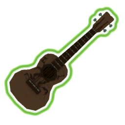
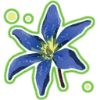

Обычные предметы
- Бронебойные пули
- Наносит 20% дополнительного урона (+20% за стак) по боссам. Для открытия нужно 1 раз зарядить телепорт
- Запасной магазин
- Добавляет 1 (+1 за стак) заряд ко второй способности. Для открытия нужно зарядить портал, ни разу не получив урона.

- Стейк из Бизона
- Увеличивает максимальное здоровье на 25 (+25 за стак). Открыт изначально
- Связка петард
- При использовании объекта запускаются 8 (+4 за стак) ракет, которые наносят 300% урона. Для открытия нужно скопировать один и тот же предмет на принтере 7 раз
- Буйногриб
- Если стоите неподвижно в течение 1 секунды, появляется зона радиусом 3 метра (+1,5 метра за стак), которая исцеляет на 4,5% (+2,25% за стак) здоровья в секунду вам и вашим союзникам. Открыт изначально.
- Осторожный слизень
- Увеличивает пассивное восстановление здоровья на +3 HP в секунду (+3 HP в секунду за стак) вне боя. Открыт изначально.
- Лом
- Наносит 75% (+75% за стак) урона врагам со здоровьем выше 90%. Найдите 10 уникальных белых предметов.
- Изящные часы
- Увеличивает урон на 20% (+20% за стак). Получение урона ниже 25% здоровья разрушает этот предмет.
- Энергетик
- Скорость бега увеличивается на 25% (+25% за стак). Открыт изначально.
- Бензин
- При убийстве врага поджигаются ближайшие враги в радиусе 12 метров (+4 метра за стак). Горящим противникам наносится 150% (+75% за стак) урона. Открыт изначально.
- Мусор - белого качества
- Приоритетно используется в принтере
- Lens-Maker's очки
- Атаки с вероятностью +10% за стак могут нанести двойной урон. Открыт изначально
- Аптечка
- Через 2 секунды после получения урона лечит на 20 HP +5% (+5% за стак) от макс HP. Победите элитного монстра.
- Кристалл сосредоточения
- Повышает наносимый врагам урон +20% за стак в радиусе 13 метров. Открыт изначально.
- Кофе
- Увеличивает скорость атаки на 7,5% (+7,5 за стак) и скорость передвижения на 7% (+7% за стак)
- Опал странной формы
- Увеличьте броню на 100 (+100 за стак), находясь вне опасности.

- Козлиное копыто Пола.
- Увеличивает скорость передвижения на +14% за стак. Три раза подряд потерпите неудачу в Святилище Удачи.
- Персональный генератор щита
- Дает игроку +8% щита за стак, который восстанавливается вне боя за 7 секунд после получения урона. Открыт изначально.
- Эликсир силы
- При нанесении урона ниже 25% здоровья расходуется этот предмет, восстанавливающий вас на 75% от максимального уровня здоровья.

- Отталкивающая бронепластина
- Уменьшение всего входящего урона на +5 за стак. Не может быть уменьшено ниже 1. Открыт изначально.
- Пачка пенни
- Получайте 3 (+3 за стaк) золотых за нанесение урона врагу. Масштабируется со временем.
- Ржавый ключ
- Появляется ящик, содержащий предмет с шансом: 80% зеленый или 20% красный. Открытие ящика использует ключ. Победите босса телепорта, уложившись в 15 секунд.
- Липкая бомба
- Шанс +5% прикрепить к противнику бомбу за стак, нанеся 180% урона. Открыт изначально.

- Оглущающая граната
- Шанс +5% оглушить противника при попадании на 2 секунды за стак.
- Шприц солдата
- Увеличивает скорость атаки на +15% за стак.
- Брошь с топазом
- Дает временную броню на 15 здоровья после убийства.

- Тяжелые времена
- +15% шанса заблокировать входящий урон за каждый стак. Не зависит от удачи. Умрите 5 раз.
- Трехгранный кинжал
- +10% шанс нанести кровотечение противникам за стак, наносящее 240% урона.
- Боевой стяг
- При повышении уровня на землю падает знамя, которое дает +30% к скорости атаки и передвижения в радиусе 16 метров. (+8 метров за стак).
Редкие предметы
- Ракета "воздух-земля" Mk.1
- Каждая атака получает 10% шанс выпустить самонаводящуюся ракету, которая наносит +300% урона за стак. Открыт изначально.
- Блуждающий огонёк
- При убийстве врага появляется столб лавы, который в радиусе 12 метров (+2,4 метра за стак) наносит 350% (+280% за стак) базового урона. Открыт изначально.
- Перо хопа
- Дает +1 прыжок за стак. Открыт изначально.

- Укулеле
- Каждая атака получает 25% шанс выпустить цепную молнию, наносящую 80% урона 3 целям (+2 за стак) в радиусе 20 метров. (+2 метра за стак). Открыт изначально.
- Семя кровососа
- Каждая атака восстанавливает единицу здоровья за стак. Открыт изначально.
- Инстикты хищника
- Критический удар увеличивает скорость атаки на 10% на короткое время. Максимум 30% (+20% за стак) скорости атаки. Достичь +200% скорости атаки.
- Красный хлыст
- Увеличивает скорость передвижения на +30% за стак вне боя. Открыт изначально.
- Стырй боевой набор скрытности
- При получении урона есть шанс получить +40% скорости передвижения и невидимость на 3 секунды (+1,5 секунды за стак). Чем больше урона вы получили, тем больше шанс. Открыт изначально.

- Серп жнеца
- Дает 5% критического удара. Критический удар лечит на 8 (+4 за стак) единиц.
- Топливная батарея
- Дает +1 за стак заряд для активного предмета, а также уменьшает его время перезарядки на +15% за стак. Подобрать пять разных типов снаряжения.
- Инъекция
- Убийство врага дает единицу здоровья навсегда за стак, максимум добавляет +100 единиц здоровья за стак. Убейте 3000 врагов.

- Патронаш
- Дает шанс 18% (+10% за стак) после убийства врага заспавнить коробку с патронами, которая перезаряжает все способности. Открыт изначально.
- Наплечник берсерка
- Убийство трех врагов за секунду вводит вас в бешенство на 6 секунд (+4 секунды за стак), увеличивает скорость передвижения на 50% и скорость атаки на 100%. Зарядите телепорт, имея меньше 10% здоровья.
- Щит розы
- Увеличение брони во время бега на +30 единиц за стак. Открыт изначально.
- Браслет Рунальда
- Попадание наносит по врагам 400% и взрывается, нанося 250% (+250% урона за стак), замедляя на 80%. Длится 3 секунды (+3 секунды за стак). Заряжается каждые 10 секунд. Найдите и убейте Кьяро и Рунальда в потайной комнате на Заброшенном акведуке.
- Браслет Кьяро
- Попадание наносит по врагам 400% и взрывается, нанося 300% (+300% урона за стак). Заряжается каждые 10 секунд. Найдите и убейте Кьяро и Рунальда в потайной комнате на Заброшенном акведуке.
- Хроноштучка
- Замедляет врагов на 60% на +2 секунды за стак. Открыт изначально.
- Восковая перепелка
- Прыгая во время бега вас подбрасывает вперед на +10 метров за стак. Достичь +300% скорости передвижения (в том числе и бег).
- Старинная гильотина
- Мгновенно убивает элитных монстров, у которых осталось меньше +20% здоровья за стак. Победите 500 элитных монстров
- Боевой рог
- При использовании снаряжения вы получаете 70% к скорости атаки на 8 секунд (+4 секунды за стак). Используйте 3 Святилища битвы на одном уровне.

- Лептонная ромашка.
- Устраивает исцеляющий взрыв во время зарядки телепорта и исцеляет союзников в радиусе портала на 50% от их максимального запаса здоровья. Срабатывает +1 раз за стак. Открыт изначально.
- Колючая проволока
- При получении урона выпускает шквал лезвий, наносящих 160% урона. Поражается до 5 (+2 за стак) целей в радиусе 25 метров (+10 метров за стак). Открыт изначально.
- Фолиант гора
- Вероятность получения сокровища стоимостью 25$ при убийстве + 4% за стак. Награда увеличивается со сложностью. Открыт изначально.
- Полип спрута
- При активации интерактива призывает турель, атакующую ближайших врагов с +100% скоростью атаки за стак. Живет 30 секунд. Активируйте 6 турелей за забег.
- Метка смерти
- Враги с 4 или более ослаблениями отмечаются меткой смерти. Получаемый ими урон от всех источников увеличивается на 50% на 7 секунд за стак.
- Охотничий гарпун
- Убийство врага увеличивает скорость передвижения на 125%, затухая в течение 1 секунды (+0,5 за стек).
- Резервуар для воспламенения
- Эффекты воспламенения наносят на +300% (+300% за стек) больше урона с течением времени.
- Сюрикен
- Активация вашего основного навыка также выбрасывает сюрикен, который наносит 400% (+100% за стек) базового урона. Вы можете удерживать до 3 (+1 за стек) сюрикенов, которые перезаряжаются в течение 10 секунд.
- Регенерирующий лом
- Ничего не делает. Имеет приоритет при использовании с необычными 3D-принтерами. В начале каждого этапа он восстанавливается.
- Форма запроса на доставку
- Посылка, содержащая 2 предмета (79%/20%/1%), будет появляться в случайном месте на каждом этапе. (Увеличивает вероятность редкости предметов в стаке).
- Лом, зеленый
- Ничего не делает. Имеет приоритет при использовании с 3D-принтерами.
Легендарные предметы
- Блистающая махина
- Все атаки взрываются, нанося 60% урона всем врагам в радиусе 4 м (+2,5 м за шт.) Открыт изначально.
- Церемониальный Кинжал
- Убийство врага создаёт 3 самонаводящихся кинжала, которые наносят +150% за шт. урона
- Морозная реликвия
- Убийство врага призывает ледяную бурю, которая возникает вокруг вас и наносит 1200% урона в секунду и замедляет врагов на 80% на 1,5 сек. Буря растёт после каждого убийства на 2 м. Максимальный рост - 18 м(+12 м за шт.)
- Счастливая Маска
- Убийство врага имеет 7% шанс призвать призрака врага, которые наносит 1500% базового урона. Призрак живёт +30 сек. за шт.
- Г0Л080-60Й вер.2
- В прыжке удержать кнопку взаимодействия. Увеличивает высоту прыжка. При приземлении вызывает кинетическую волну радиусом 5-100 м., которая наносит 1000%-10000% базового урона всем врагам в радиусе. Перезаряжается 10 секунд (-50% за шт.)
- Мнение Н'Куханы
- Сохраняет 100% за шт. лечения в виде энергии души. Когда ваш запас энергии души достигнет 10% от вашего максимального уровня здоровья, выстреливает черепом, наносящим 250% вашего запаса энергии души в виде урона
- Нестабильная катушка тесла
- Бьёт молниями 3 (+2 за шт.) ближайших врагов, нанося 200% базового урона каждые 0.5 сек. Каждые 10 сек. катушка Теслы отключается
- 57-листный клевер
- Все случайные эффекты получают +1 за шт. дополнительный бросок на удачный результат
- Разумный Крюк для Мяса
- Каждая атака имеет +20% за шт. шанс выпустить 10 (+5 за шт.) самонаводящихся крюков, которые наносят 100% урона
- Голова инопланетянина
- Уменьшает время перезарядки способностей на +25% за шт.
- Персональный катализатор
- Убийство уменьшает время перезарядки активного предмета на 4 сек. (+2 сек. за шт.)

- Лучший друг Дио
- Возрождает +1 за шт. после смерти. После возрождения вы неуязвимы на 3 сек.
- Камера жесткого излучения
- Добавляет +2 за шт. заряда к вспомогательному навыку и уменьшает его перезарядку на 33%
- Пробуждение стервятников
- Даёт силу любого элитного врага на 8 секунд (+5 сек. за шт.)
- Mozgojor
- После убийства элитного врага, даёт бешенство на 4 сек. (+4 сек. за шт) делая перезарядку навыков 0,5 сек.
- Стойка регенерации
- Лечение восстанавливает на +100% за шт. больше здоровья
- Покров
- Лечение сверх максимального здоровья дает временный барьер мощностью до +50% за шт. от максимального здоровья
- Убийственная справедливость
- После 5 попаданий (стак) по врагу его броня снижается на 60 на +8 за стак сек.
- Резонирующий диск
- Убив 4 врага за 7 секунд, диск перезарядится. Диск сам выстреливает в цель, проходя через врагов нанося им урон +300% за шт. базового урона, потом взрывается +1000% за шт. базового урона, возвращаясь к владельцу проходит через врагов и наносит им +300% за шт. урона
- Межзвёздное настольное растение
- Растение, лечит 5% макс. здоровья каждые 0,5 секунды в радиусе 10 метров (+5 метра за шт.). Продолжительность 10 сек.
- Защитные миниботы
- Сбивает 1(+1 за шт.) атакующие снаряды на расстоянии 20 метров каждые 0,5 сек. Скорость перезарядки зависит от вашей скорострельности
- Лазерный прицел
- Критические попадания дополнительно наносят 100% (+100% за шт.) урона
- Карманная М.К.Б.Р.
- Все ракетные устройства выстреливают на 2 ракеты больше, увеличивает урон ракет на 50% (+50% за шт.)
- Запасные части дрона
- Даёт Col.DroneMan. Дроны получают +50% (+50% за шт.) к скорости атаки и уменьшает перезарядку способностей. Даёт дронам 10% шанс выстрелить ракетой за попадание, наносят 300% от всего урона.Дроны получают миниганы которые наносят 6x100% урона, отскакивая в двух врагов
- Симбиоз скорпиона
- За попадание по врагу снимет ему показатель брони на 2 (+2 за шт.) ед.
- Плащ Бена
- Предотвращает получение 1 (+1 за шт.) отрицательного эффекта, создавая временный барьер, прочность которого равна 10% от макс. здоровья.
Восстанавливается каждые 5 секунд.
- Хаос в бутылке
- Активирует случайный эффект активного предмета 1 (+1 за шт.) раз
- Лом, красный
- Ничего не делает. Имеет приоритет при использовании с 3D-принтерами.
Боссов/Планет предметы
- Титаническая шишка
- Увеличивает максимальное здоровье на +40 ед. за шт. и регенерацию на +1.6 здоровья/сек. за шт.
- Железа королевы
- Призывает каждые 30 сек. Жука-стражника, который имеет 100% здоровья и наносит 300% базового урона. Максимум +1 за шт. Жук-стражник одновременно
- Семя безмятежности
- Призывает златитана во время события с телепортом.
Златитан наносит 100% (+50% за шт.) урона и имеет +100% за шт. здоровья
- Маленький последователь
- Стреляет самонаводящимися сгустками, наносящими +300% за шт. урона. Сгустки выпускаются каждые 1,6 сек. во время бега. Скорострельность зависит от скорости передвижения
- Жемчужина
- Увеличивает максимальный запас здоровья на +10% за шт.
- Сияющая жемчужина
- Повышает все параметры на +10% за шт.
- Цикл бытия
- Если уровень вашего здоровья опускается ниже25%, вы взрываетесь, нанося 6000% базового урона. Восстанавливается каждые 30 сек. / (2 + (+1 за шт.))
- Ключ для артефакта
- Нужен при открытии одного из артефакта, используется для убийства сферы в зоне артефакта
- Расплавленный пронзатель
- При попадании 10% шанс призвать 3 огненных шара, каждый наносит
300% урона(+300% за шт.)
- Вырезанная селезёнка
- Даёт +5% к крит. шансу. Крит. удары вызывают кровотечение 240% от базового урона. Кровоточащие враги взрываются 400%(+400% за шт.) +15%(+15%за шт.) от их макс. здоровья
- Загрязнённая урна
- Во время боя, 1(+1 за шт.) ближайшее существо в радиусе 13 метров присасывается к вам и наносит ему урон 100%(+100% за шт.) в секунду. Исцеляет вас на 100% от нанесённого урона
- Заряженный пронзатель
- 10% шанс при атаке ударить молнией 500% урона(+500% за шт.)
- Ядра сочувствия
- Каждые 30 сек., вызывает Зонды, даёт +100% урона(+100% за шт.) за каждого союзника в команде

- Планула
- При получении урона лечит на 15 ОЗ(+15 за шт.)
- Защитное ядро
- После убийства элитного монстра создаёт "Alpha" конструкцию, имеющую 300% урона и 300% здоровья. Максимум 4 (+4 за шт.)
- Лом, желтый
- Ничего не делает. Имеет приоритет при использовании с 3D-принтерами.
Лунные предметы
- Формованное стекло
- Увеличивает урон на +100% за шт., но уменьшает максимальное здоровье на -50% за шт.
- Хрупкий венец
- Даёт 30% шанс получить +2 за шт. золота, нанося урон. При получении урона Вы теряете золото в количестве, равном +100% за шт. от числа попаданий по вам, или теряете золото в количестве, равном +100% за шт. от % потерянного максимального здоровья
- Превосходство
- Конвертирует все здоровье, кроме 1 единицы, в щиты. Даёт 50% максимального здоровья +25% за шт. Щит восстанавливается через 7 секунд после последнего получения урона
- Мертвоцвет
- Увеличивает лечение на +100% за шт., но всё лечение приходит с задержкой. Также ограничивает лечение за раз до 10% (-50% за стак) от максимального здоровья
- Жест утопленника
- Уменьшает время перезарядки активного предмета на 50% (+15% за шт.), но перезаряженный предмет будет автоматически активирован

- Распространение ереси
- Заменяет вспом. навык. Вы исчезаете из реальности и получаете +30% к скорости движения. Мгновенно исцеляет на +18,2% за шт. от максимального запаса здоровья. Действует +3 за шт. секунды
- Видение ереси
- Заменяет основной навык.
Выстреливает шквал отслеживающих осколков, взрывающихся через определённое время, нанося 120% базового урона. До +12 за шт., которые перезаряжаются через +2 сек. за шт.
- Бусины верности
- Кажется, ничего не делать... но...
Открывает потайную локацию после завершения у Обелиска
(просто использовать, закончив игру)
- Сфокусированная конвергенция
- Заряжает портал на +30% за шт., но зона портала на -50% за шт. меньше. Больше 3-ёх предметов результат не даёт
- Неподатливое долото
- Используя храмы(shrines), появляются враги. Кол-во зависит от времени
- Ртутный позвоночник
- Со случайным местоположением создаёт Оберег силы, тем самым усиливая врагов и союзников на +50% к урону, в радиусе 16 м.(+50% за шт.)
- Чистота
- Перезарядка навыков уменьшена на 2 сек.(+1 за шт.), но теперь все рандомные эффекты переигрываются +1 раз(+1 за шт.) для неблагоприятного исхода.
- Крюки ереси
- Заменяет Secondary skill. Заряжает выстрел наносящий 875% урона ближайшим врагам, взрывается через 3 секунды нанося 700% урона и обездвиживает на 3 сек.(+3 за шт.). Перезаряжается 5 сек(+5 за шт.).
- Эгоцентризм
- Каждые 3 (-50% за шт.) секунды, даёт орбитальную бомбу, которая взрывается при контакте нанося 360% урона. Максимум 3 (+1 за шт.) бомбы. Каждые 60 секунд ваш случайный предмет превращается в бомбу
- Хвала - Zero
- Предметы имеют 5% (+5% за шт.) шанс превратиться в лунарный предмет
- Каменный потоковый наплеч
- Увеличивает макс. здоровье на 100% (+100% за шт.). Уменьшая скорость бега га 50% (+50% за шт.)
- Лёгкий потоковый наплеч
- Уменьшает перезарядку способностей на 50% (+50% за шт.). Уменьшая скорость атаки на 50% (+50% за шт.)

- Эссенция ереси
- Заменяет Special skill.
Наносит урон и добавляет заряды на способности, 10 сек. (+10 за шт.). Активация способности взрывает все заряды, неограниченный радиус, наносит 300% урона + 120% урона за каждый заряд способности . Перезарядка 8 сек.(+8 за шт.)
- Светящийся метеорит
- Вызывает метеоритный дождь, который длится 20 секунд. Каждый метеорит наносит 600% всем персонажам
- Настойка адского пламени
- Поджигает всех персонажей в радиусе 15 метров на 12 сек., нанося 5% здоровья/сек. от максимального здоровья. Наносит в 2 раза меньше урона по вам, и в 4 по союзникам, и в 24 раза больше урона противникам
- Тотем горя
- Выбрасывается при использовании, замедляет всех персонажей на 50% в радиусе и уменьшает их броню на 20%. Максимум 5 штук
- Шпинельный тоник
- Действует 20 сек., увеличивает урон на 100%. Повышает скорость атаки на +70%. Улучшает броню на +20. Увеличивает макс. здоровье на +50%. Ускоряет пассивную регенерацию здоровья на 300%. Повышает скорость движения на +30%.
Когда действие тоника прекращается, с вероятностью 20% вы получите снижение всех параметров на 5%
Пустотные предметы
- Benthic Bloom
- Улучшает 3 (+3 за шт.) случайных предмета до предметов следующей редкости (От белого к зелёному) на старте каждого этажа

- Encrusted Key
- Скрытый ящик, которой имеет предмет (60% белый/ 30% зелёный/ 10% красный), появляется на локации случайно. Открытие ящика использует этот предмет
- Lost Seer's Lenses
- Имеет 0,5% (+0,5% за шт.) шанс моментально убить врага, не являющихся боссами
- Lysate Cell
- Даёт +1 (+1 за шт.) заряд специальной способности. Уменьшает перезарядку специальной способности на 33%
- Needlestick
- Имеет шанс 10%(+10% за шт.) повесить дебафф "collapse", который активируется через 3 секунды и нанесёт 400% базового урона
- Newly Hatched Zoea
- Каждые 60 (-50% за шт.) секунд, даёт союзника из пустоты. Можно иметь за раз до 1 (+1 за шт.) союзников
- Plasma Shrimp
- Даёт щит, равный 10% от вашего максимального здоровья. Пока у вас есть щит, попадание во врага запускает ракету, которая наносит 40% (+40% за шт.) общего урона.
- Pluripotent Larva
- Если вы умерли, то этот предмет используется и к жизни с 3 секундами бессмертия, и все ваши предметы могут стать испорченными
- Polylute
- 25% шанс выстрелить молнией нанося 60% всего урона, 3 (+3 за шт.) раза одновременно

- Safer Spaces
- Блокирует входящий урон один раз. Перезарядка 15 секунд (-10% за шт.)
- Singularity Band
- Поглощает все браслеты Рунальда и Кьяро. Удар который наносит урона больше чем 400% создаёт область которая засасывает всех врагов в радиусе 15 метров со временем взрывается и наносит 100% (+100% за шт.) всего урона. Перезарядка 20 секунд
- Tentabauble
- 5% (+5% за шт.) шанс при нанесении урона может обездвижить врага на 1 сек (+1 сек. за шт.)
- Voidsent Flame
- При нанесении урона врагу с полным здоровьем, создаёт столб лавы в радиусе 12 метров (+2,4м за шт.), нанося 260% (+156% за шт.) базового урона.
- Weeping Fungus
- Лечит на 2% (+2% за шт.) от вашего здоровья вас пока вы находитесь в состоянии бега
Активные предметы
- Никудышная ракетная установка
- При использовании выпускает 12 самонаводящихся ракет, каждая наносит 300% базового урона
- Странный плод
- Мгновенно исцеляет 50% максимального здоровья
- Первобытный куб
- Выпускает черную дыру, которая засасывает всех врагов в радиусе 30 метров. Длится 10 секунд.
- Треуголка охотника за трофеями
- Казните врага с которого может выпасть уникальный предмет, он 100% его выбросит(в том числе босс предметы)
- Интерфейс окуляра
- При использовании даёт 100% шанс критического удара на 8 секунд
- Резерв
- Призывает 4 боевых дронов на 25 секунд, которые сражаются за вас

- Накопитель преонов
- Выпускает энергетический шар, который летит по прямой, нанося всем врагам в радиусе 35м 600% урона/сек. При контакте взрывается, нанося всем врагам в радиусе 20м 4000% урона
- Губо-младший
- Создаёт липкого клона, который имеет 300% урона, 300% здоровья
- Молочная куколка
- При использовании Персонаж отращивает крылья, позволяющие летать и увеличивающие скорость передвижения на 20%. Длится 15 секунд
- Королевский конденсатор
- Наносит 3000% урона выбранному врагу и оглушает ближайшие цели
- Молотов (6-набор)
- Бросает 6 коктейлей Молотовых, поджигая и нанося 500% базового урона
- Исполнительная карта
- Когда вы тратите золото, вам возвращается 10% золота обратно. Если покупка была в Мульти-магазине, то остальные ячейки в магазине будут открыты
- Спонсор
- Выпускает непрерывный заградительный огонь, наносящий 100% урона одной пулей. Тратит 1 золото на 1 пулю. Стоимость увеличивается со временем
- Корявая дриада
- Даёт Лесного Духа, который летает за вами и восстанавливает 1.5% максимального здоровья/секунду(пассивный эффект). Можно использовать на союзнике, вылечив до 10% от максимального здоровья

- Радар
- Разведывает карту и помечает сундуки и остальные предметы

- Странный сосуд
- Создает квантовый туннель длиной до 1000 м. Действует 30 сек
- Град взрывов
- Снимает все отрицательные эффекты, а также уничтожает снаряды рядом
- Вулканическое яйцо
- Вы превращаетесь в сгусток драконьего пламени на 5 сек. Наносит 500% урона при попадании. После взрывается, нанося 800% урона
- Нефритовый слон
- Даёт 500 брони на 5 секунд
- Пилоранг
- Бростье три больших пилы, которые рассекают врагов на предмет 3x400%. Также наносят дополнительный урон кровотечением в секунду 3x100%. Возвращается к вам ударяя врагов
- Переработчик
- Может переработать предмет или активку в другой предмет, но такого же тира
- Очень большая пиявка
- Даёт 20% процентов от нанесённого урона. Длиться 8 секунд
- Опус Горага
- Вводит союзников в бешенство на
7 секунд. Увеличивает скорость передвижения на 50% и повышает скорострельность на 100%.
- Прости меня пожалуйста
- Бросает куклу, которая использует, предметы с эффектом после убийства
(которые длятся не меньше 1 секунды). Продолжительность 8 секунд
- Дистанционный кофеинатор
- Вызовите Eclipse Zero торговый автомат из UES Safe Travels. Доставка занимает 5 секунд, наносит 2000% урона. Лечит до трёх целей на 25% от их максимального здоровья
- Метка ифрита
- Наделяет владельца силой огненной элиты. На персонаже появляются рога и он окрашивается в красный цвет. При беге остается огненный след, который наносит урон врагам, а удары поджигают противников
- Его утешения
- Игрок иногда лечит ближайших союзников, после смерти оставляет лечащую сферу. Топливный элемент и предметы уменьшения перезарядки не оказывают эффекта
- Затишье между двумя ударами
- Наделяет владельца силой перегруженной элиты. На персонаже появляются 2 рога и он окрашивается в кислотно-голубой цвет. При ударах по врагу прикрепляет электр. бомбу, которая взрывается спустя некоторое время, нанося 50% урона. Половина здоровья замещается щитами
- Её колючие объятия
- Наделяет владельца силой ледяной элиты. На персонаже появляются кристаллы льда и он окрашивается в голубой цвет. При ударах замедляет противника. После смерти появляется ледяная сфера, которая взрывается спустя 2 секунды, нанося 150% урона и замораживает всех врагов в радиусе действия
- Возражение Н'Кухана
- Все атаки игрока отключают лечение у врагов на 8 секунд, также они будут периодически выпускать 3-4 колючих шара. При касании, шары будут взрываться 100% урона и создавать колючие ямы наносящие 100% урона при контакте. В дополнение игрок после смерти будет оставлять после себя монстра который будет атаковать ближайших врагов, но с Лучший друг Дио он имеет ограниченную пользу.
- Спектральная окружность
- Атаки игрока замедляют врагов на 80%, также создаёт ауру которая делает вас и ваших союзников невидимыми.
- Общий дизайн
- Атаки игрока калечит врага, -20 брони и -50% скорости передвижения, иногда выстреливает 4-мя бомбами во врагов, которые увеличат скорость передвижение на 30% и увеличит макс здоровье на 25%, но превратит всё здоровье в броню кроме одного очка здоровья (подобно Трансцендентности(синий предмет)).
- Топливный массив
- Выглядит как будто это может что-то зарядить. Слишком нестабильно. Нужен для открытия одного из персонажей, используется на лавовом этаже